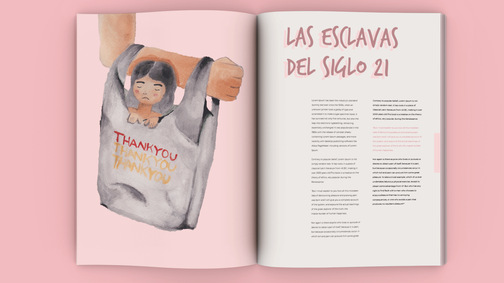

ILUSTRACIÓN TRATA DE MUJERES
2017 – Ilustración avanzada
Se uso la figura retórica sobre cómo las niñas son utilizadas como mercancías. La expresión de la niña es de tristeza, y el brazo representando con puño cerrado refleja que quiénes llevan están en este tipo de red es gente violenta .